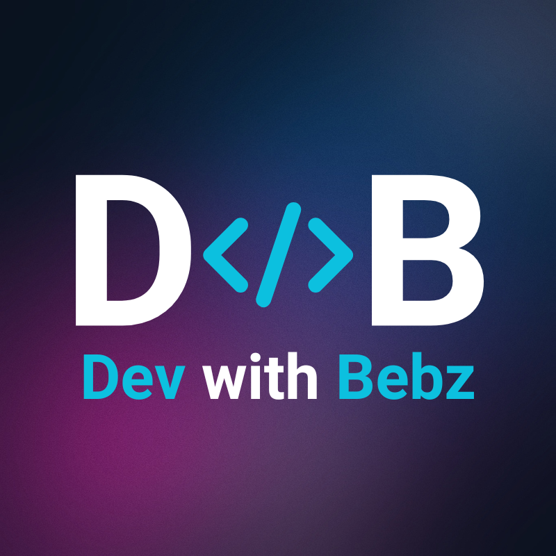

คู่มือ Workspace · เปิดอ่านได้ออฟไลน์
บอกโฟลเดอร์ครั้งแรก
เรียกชื่อโปรเจกต์ในครั้งต่อไป
Workspace คือชื่อที่ผูกกับโฟลเดอร์งานของคุณ ช่วยให้แต่ละแชทใช้ไฟล์และเริ่มคำสั่งในโปรเจกต์ที่ถูกต้อง โดยไม่ต้องพิมพ์ที่อยู่โฟลเดอร์ยาว ๆ ทุกครั้ง
บอกโฟลเดอร์ พร้อมชื่อที่คุณจำง่าย
หลังเชื่อมต่อ DWB กับ AI client แล้ว ลองพิมพ์ข้อความนี้ โดยเปลี่ยน path เป็นโฟลเดอร์ที่มีอยู่จริงในเครื่องคุณ:
ทำงานใน D:\Projects\coffee-shop ตั้งชื่อ workspace ว่า “ร้านกาแฟ” และเพิ่ม alias “coffee-shop” ให้ด้วย
AI ควรลงทะเบียนโฟลเดอร์และผูก workspace กับแชทนี้ให้ในขั้นตอนเดียว ไม่ต้องสั่ง “สร้าง
workspace” แยกอีกครั้ง หากบอกเฉพาะโฟลเดอร์ ชื่อเริ่มต้นจะเป็นชื่อโฟลเดอร์ เช่น
coffee-shop
Alias คือชื่อเรียกอีกชื่อของ workspace เดียวกัน เช่น “ร้านกาแฟ” กับ “coffee-shop” ชี้ไปโฟลเดอร์เดียวกัน ไม่ได้สร้างสำเนาไฟล์
DWB รับคำสั่งผ่าน MCP จาก AI ไม่ได้อ่านข้อความแชทโดยตรง หาก AI ยังไม่ผูกให้ ให้บอกว่า “ใช้เครื่องมือ workspace ผูกโฟลเดอร์นี้ก่อนเริ่มงาน” โฟลเดอร์ที่เลือกใน Setup เป็นค่าเริ่มต้นและขอบเขตสิทธิ์เริ่มต้น ยังไม่ได้สร้างชื่อ workspace ให้โดยอัตโนมัติ
เรียกชื่อที่ลงทะเบียนไว้ได้เลย
ทำงานใน workspace ร้านกาแฟ
หรือใช้ชื่ออีกแบบ:
ทำ coffee-shop ต่อ ช่วยตรวจหน้าเมนูให้หน่อย
AI จะค้นชื่อหรือ alias แล้วผูก workspace ให้แชทใหม่ เมื่อชื่อตรงกับรายการเดียว คุณไม่ต้องส่ง directory เต็มอีก ใช้ชื่อที่ชัดเจน เช่น “ร้านกาแฟสาขาเชียงใหม่” เมื่อมีหลายโปรเจกต์คล้ายกัน
ชื่อเหล่านี้ใช้ได้กับ DWB ที่ใช้ข้อมูลชุดเดิมในเครื่องนี้ แชทสองอันอาจใช้ workspace เดียวกันและไฟล์ชุดเดียวกัน แต่ยังมี worker แยกกันเมื่อระบบแยก session ของแชทได้
การเลือก workspace เลือกสถานที่ทำงาน ไม่ได้ส่งประวัติแชทหรือรับประกันว่าจะต่อ process ที่แชทก่อนเปิดทิ้งไว้ คุณยังต้องบอกงานที่ต้องการทำในแชทใหม่
ชื่อชัดเจน งานก็ไปถูกที่
| สิ่งที่ระบุ | สิ่งที่จะเกิดขึ้น |
|---|---|
| โฟลเดอร์เต็มที่มีอยู่จริง | ลงทะเบียนหรือใช้ workspace ที่ตรงกับโฟลเดอร์นั้น แล้วผูกกับแชทนี้ |
| ชื่อหรือ alias พบรายการเดียว | ผูก workspace นั้นให้ ไม่ต้องพิมพ์ path ซ้ำ |
| ชื่อซ้ำหรือพบหลายรายการ | ต้องเลือกให้ชัด โดยดูชื่อและโฟลเดอร์ที่แสดง หรือใช้ path/ID ที่ตรงตัว |
| ชื่อที่ยังไม่รู้จัก | บอกโฟลเดอร์ครั้งแรกและตั้งชื่อให้ก่อน ชื่ออย่างเดียวไม่ทำให้ระบบรู้ตำแหน่งไฟล์ |
| ไม่บอกชื่อหรือโฟลเดอร์เลย | ยังไม่มี workspace ผูกกับแชทใหม่ และ worker ใช้โฟลเดอร์เริ่มต้นจาก Setup ระบบไม่เลือกโปรเจกต์จากแชทล่าสุดให้เอง |
ไม่แน่ใจ ก็ให้ AI แสดงชื่อและโฟลเดอร์
แสดง workspace ที่มี พร้อมโฟลเดอร์ของแต่ละตัว
แชทนี้ใช้ workspace ไหน และ working directory อะไรอยู่?
เปลี่ยนแชทนี้ไปใช้ workspace ร้านกาแฟ
- เปลี่ยนโฟลเดอร์: เปลี่ยนเฉพาะแชทนี้ worker ว่างเดิมจะถูกคืน และคำขอถัดไปเริ่ม worker ในโฟลเดอร์ใหม่ แชทอื่นยังใช้ค่าของตัวเอง
- ยังมีงานรันอยู่: ให้คำขอ/process/search เดิมจบก่อนเปลี่ยน workspace เพื่อไม่ตัดงานกลางทาง
-
นอกโฟลเดอร์ที่อนุญาต: การเลือก workspace ไม่เพิ่มสิทธิ์ไฟล์ให้เอง หาก
Desktop Commander ปฏิเสธ ให้ตรวจ
allowedDirectoriesในbase-policy.jsonที่ Setup สร้าง แล้วเพิ่มเฉพาะโฟลเดอร์ที่ต้องการอนุญาตและเริ่ม broker ใหม่ - ทำงานไฟล์ร่วมกัน: การแยก worker ไม่ได้แยกสำเนาไฟล์ ระบบช่วยกันเขียนชนกันและกันเขียนนอก workspace สำหรับ file tools ที่รองรับ แต่ไม่ได้ครอบคลุมการแก้ไฟล์ผ่าน shell ทุกชนิด